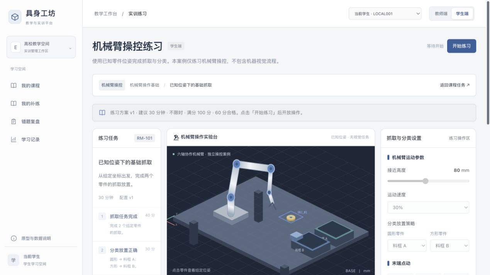
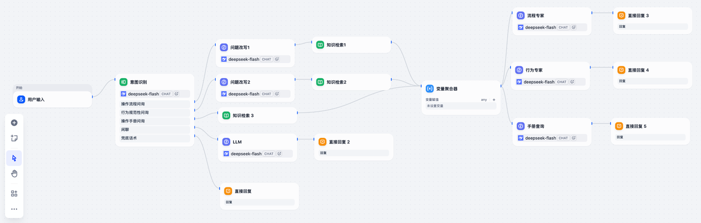
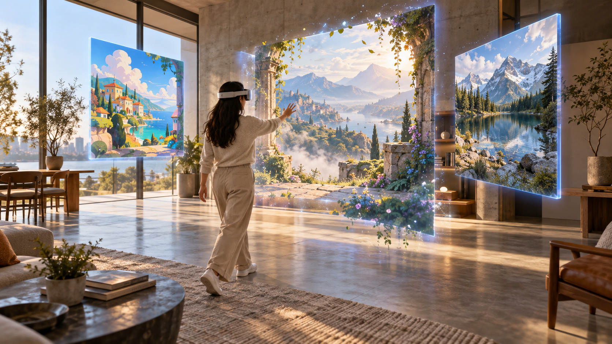
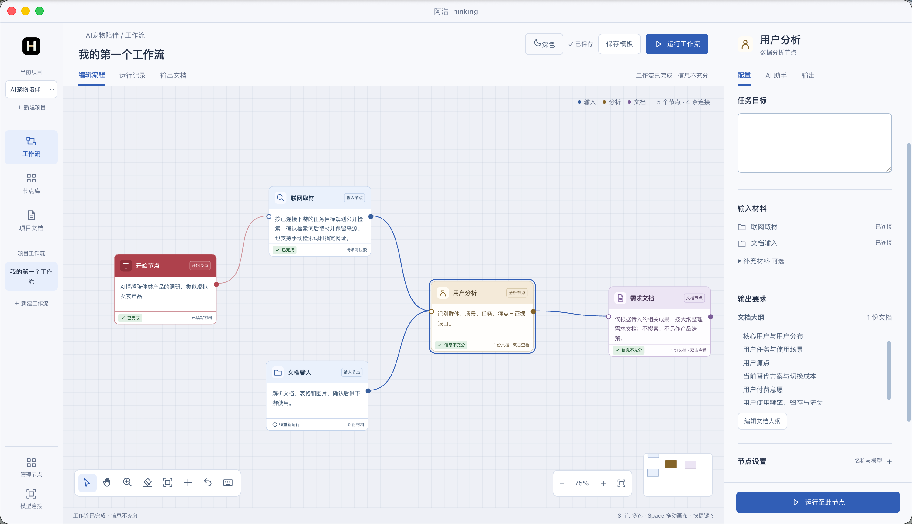
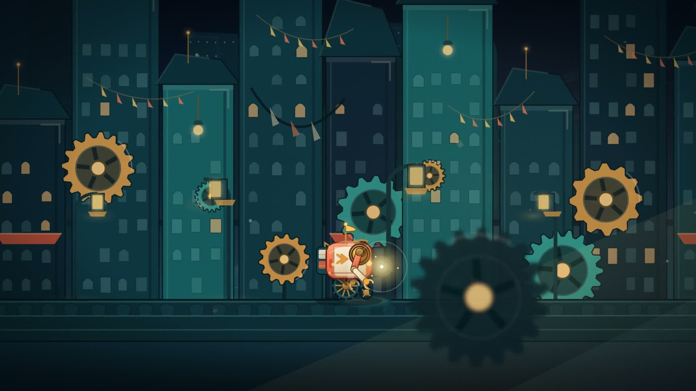
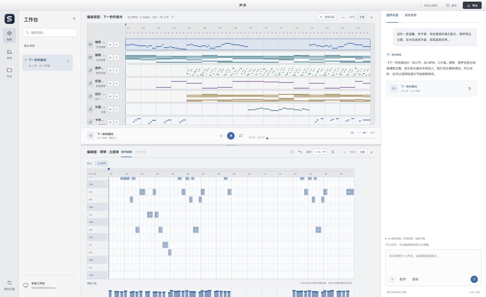
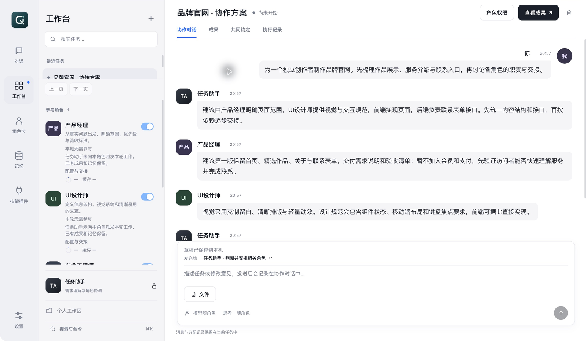
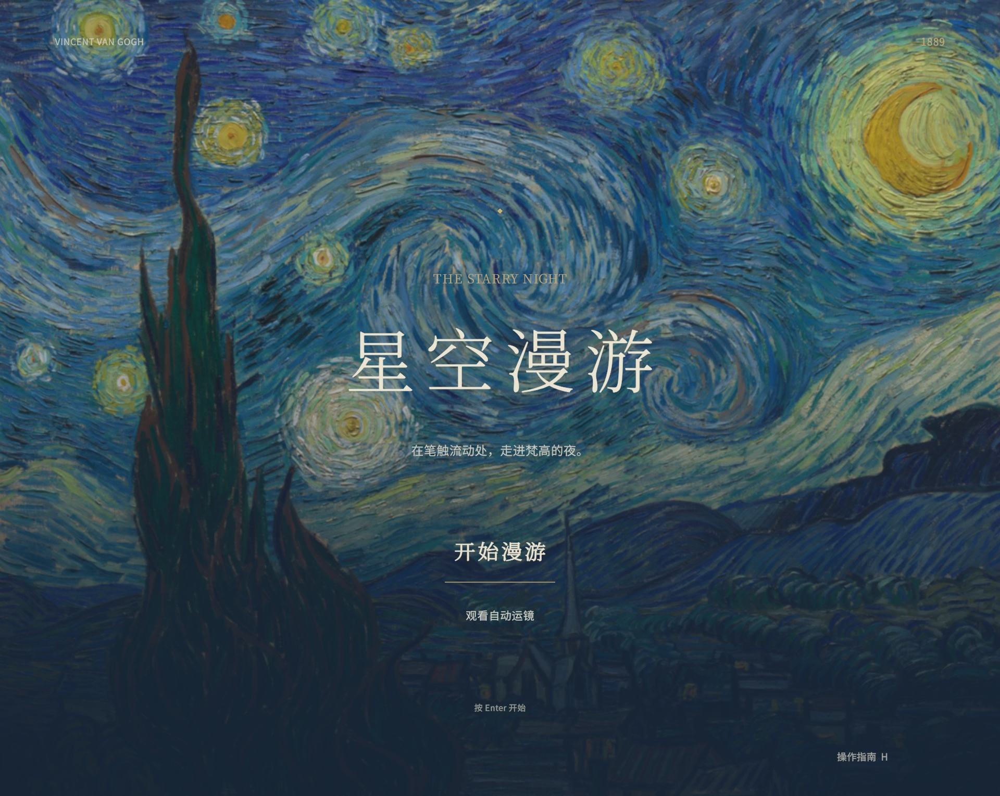
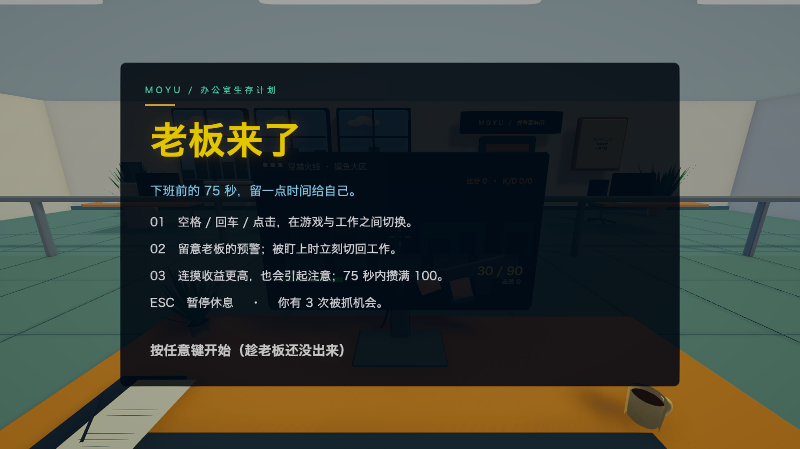

高校实训中的课程、案例指导与学情反馈。
项目示意画面，并不是真实画面查看项目
高校实训中的课程、案例指导与学情反馈。
项目示意画面，并不是真实画面查看项目
在仿真练习现场回答步骤与专业名词问题。
项目示意画面，并不是真实画面查看项目
AI生图与混合现实空间预览。
项目示意画面，并不是真实画面查看项目
将资料、搜索和报告串成可调整的研究流程。
查看项目
生成之后，还能继续修改镜头和时间线。
查看项目
用可编辑乐谱承接AI编曲，保留局部控制。
查看项目原图抠出商品，再为商品生成新场景。
查看项目
让角色、记忆和文件交接围绕实际交付协作。
查看项目
走进三维笔触组成的名画世界。
查看项目云端旅行、自由观景与下车探索。
查看项目
75秒内，用单键切屏做风险收益判断。
查看项目5个方向，11个产品与互动体验。
让高校实训，从“跟着做”走向“理解后会做”。
项目示意画面，并不是真实画面
建议体验：教师看板 → 切换学生 → 课程练习 → 操作与助教反馈。使用本地与合成演示数据。
传统教育平台课程更新缓慢、系统老旧，难以跟上具身智能领域的知识迭代；高校新开相关课程后，还需要把机器视觉、机械臂操控的原理教学与实操练习组织在同一平台中。因此从0到1规划具身智能Agent教学平台。
高校具身智能、机器人工程等相关课程的教师与学生。教师需要发布课程、管理班级、维护案例并查看学情；学生需要完成课程练习、对低分内容补练，并查看错题与学习记录。
教师侧解决课程与案例难更新、学生进展难集中掌握的问题；学生侧解决独立练习时缺少过程指导、完成操作后不清楚薄弱点的问题。平台将课程、案例指导、操作评分、学习分析与补练衔接起来，支持教学内容持续扩展。
把答疑放进练习现场，让操作疑问有据可查。
项目示意画面，并不是真实画面
“下一步该做什么？”
把学生的口语化提问，连接到当前操作与相关知识。
问答场景示意，非实时模型回答意图识别 → 问题改写 → 混合检索 → 专业回复
公司已有压疮、灌肠、新生儿、心肺等医护仿真教学案例，学生能够模拟操作并获得评分，但练习中遇到不会的步骤或不懂的专业名词，仍需要额外求助。项目是在这些存量仿真软件中增加AI答疑与流程指引。
在高校医护仿真软件中进行练习的医学专业学生。典型提问包括“这一步怎么做”“这个专业名词是什么意思”“按当前流程下一步该做什么”。
让学生在练习界面内获得与当前案例相关的解释和操作建议，减少查资料或等待答疑造成的中断；对命中特定流程的提问，衔接仿真软件内的操作指引。回答需要依据业务知识，避免脱离案例泛泛作答。
将AI生成的画面，带进可以漫游的混合现实空间。
项目示意画面，并不是真实画面
MR创作平台已有场景跳转、特效、渲染风格和动画组件，但用户创作空间内容仍受现有素材限制。随着AI生图能力与MR体验结合，公司希望补齐图像创作入口，并验证生成质量、等待时间和运行成本是否满足日常使用。
MR/VR爱好者与轻量空间内容创作者。他们希望按自己的想法获得不同风格的图像，并在MR空间中查看效果，而不必先掌握专业绘画或复杂的生成工作流。
降低从创意到空间素材的制作门槛：在平台内选择风格、发起生图、查看生成状态并预览结果，同时支持高清放大。方案在1024尺寸下约15秒生成一张、单张成本约0.015元，兼顾创作等待与日常运行成本。
把零散的研究对话，组织成可复用的工作流程。
实际原型界面 · 30个独立节点与启动模板
在个人产品研究实践中，资料输入、联网搜索、市场与用户分析、报告整理需要跨多个工具进行。通用AI对话虽然能输出内容，但中间过程难以分步调整，资料与结果也需要人工反复搬运，因此开发可视化产品研究工作台。
需要做市场调研、用户分析、竞品研究和报告整理的产品经理，以及承担产品研究任务的独立开发者。使用者需要掌握研究过程，并能修改某一步后继续推进。
将资料、搜索、分析和报告产出拆成可连接的节点，支持节点独立配置、对话和文档编辑。某个环节需要补充资料或调整结论时，可以局部修改，而不必从一条长对话中重新整理整份报告；已提供30个独立节点与启动模板。
从一句创意，到还能继续修改的视频。
工作台实际产物 · 视频包含音轨，点击播放开启声音
个人制作产品演示与动态图形时，通用AI生成的代码或视频仍需要人工衔接预览、修改与导出。尤其是局部镜头不符合要求时，缺少能保留其他内容、继续编辑的工作环境，因此开发视频创作工作台。
需要制作产品演示、讲解动画和短片的独立创作者，以及希望借助AI完成视频制作的产品人员。重点场景是从一个创意出发，反复检查镜头和节奏，交付可播放的成片。
把制作任务书确认、动画生成、真实帧预览、时间线编辑与成片导出连接起来。用户可以限定选段让AI修改，并继续调整工程，而不是每次重新生成整条视频；支持1080p / 30fps导出，页面展示纸花与小机器人两段实际产物。
让AI写出的旋律，成为可以调整的每一个音符。
72 BPM · 16小节 · 10个声部
直接让AI生成音频，通常难以精确修改某个声部、某段旋律或某种乐器；一次调整可能影响整首作品。个人配乐实践需要保留已经满意的部分，并继续编辑，因此开发基于结构化乐谱的音乐工作台。
需要创作配乐、音乐草稿或多轨作品的个人创作者。使用者既希望AI帮助编曲，也需要直接调整音符、鼓点、乐器和音轨参数，而不是只接收一段最终音频。
将AI创作结果转成可编辑的乐谱与音轨，经校验后使用真实采样演奏；局部修改可限定在指定轨道与节拍范围，保留范围外内容。工作台支持71种乐器、最多32条音轨，并可导出WAV和MIDI；提供《绿野之风》等实际作品试听。
商品保真，场景出新。
实际界面与生成产物 · 点击图片可放大查看
电商宣传图依赖人工设计与拍摄，产出规模受人力和制作周期限制，部分商家难以及时更新新品宣传及已有商品素材。同时，直接用AI重画商品容易改变外观，难以满足商品展示的真实性要求，因此开发商品场景图助手。
需要持续更新商品宣传素材的中小电商商家与运营人员。用户能提供商品原图和宣传想法，但不一定具备完整的拍摄方案、设计经验或提示词编写能力。
通过对话补齐场景、数量与画幅等需求，再交付可预览、可下载的场景图；先从原图抠出商品主体，再用于场景生成，重点保留轮廓、配色、标识和纹理。支持5种画幅及失败任务补图，减少重复制作和商品外观偏差。
让多个AI角色，围绕同一份交付协作。
macOS开发预览版 · 预置演示资料库
个人用AI处理复杂任务时，需要反复配置角色、补充背景，并人工把一个角色的结果交给另一个角色。多Agent同时输出并不等于能共同交付，因此开发栖作，将角色、记忆、协作和审阅组织成可持续使用的桌面工作环境。
希望使用AI完成研究、策划或开发等复杂任务的个人用户。一次任务可能需要多个专业角色，但用户仍需控制职责、工具权限、执行过程和最终成果。
将角色职责、模型与工具配置沉淀为可复用工作配置；角色独立维护上下文，按任务依赖交接实际文件，并提供长期记忆、操作审批、变更审阅和中断恢复。让用户能检查和应用成果，而不只得到多段并列回复；预览版支持最多8个专业角色协作。
走进笔触之间。
个人AI游戏系列希望验证：在缺少完整美术、编程与声音团队的条件下，能否由产品体验目标驱动，借助AI完成可玩作品。《漫游星空》选择艺术探索场景，把静态名画转为可进入的三维笔触空间。
喜欢艺术、空间探索与慢节奏观景的玩家。用户希望自由观看画面细节，也能以较低的操作负担欣赏整个场景，而不需要完成复杂任务或战斗。
把“观看一幅画”扩展为“进入画中漫游”：用户可以自由探索三维笔触构成的场景，也可以跟随自动运镜欣赏。项目交付可运行的Unity互动原型与实机演示，验证艺术意象如何转化为实际空间体验。
把一段休息，交给云端旅程。
个人AI游戏系列围绕短时娱乐、放松观景与艺术探索开展创作。《云上列车》选择工作间隙的放松场景，用持续前进的云端旅程承载观景与探索，并验证个人借助AI完成场景、交互与声音制作的可行性。
希望在短暂休息中放松、喜欢旅行观景和自由探索的玩家。使用者更关注旅程氛围与发现感，不希望投入大量学习成本或承担紧张的操作任务。
以列车旅程串联云海、城堡和沿途场景，支持自由观景与下车探索，让玩家选择欣赏或探索的节奏。项目将观景与探索模式做成可运行原型，并提供实机视频与macOS试玩包。
75秒，在收益和风险之间做选择。
个人AI游戏系列需要验证不同体验目标如何落到可玩作品。《老板来了》选择办公室情境与碎片化娱乐，目标是在短局时长和低操作门槛下，通过清楚的风险与收益关系形成玩法。
希望利用短暂休息体验轻量挑战的休闲玩家。玩家不需要学习复杂操作，但希望每次选择都有即时反馈，并能在短时间内完成一局游戏。
以单键切屏降低操作负担，将老板预警、连续摸鱼收益与被抓惩罚结合，让玩家判断何时继续、何时收手。75秒单局包含开始、重开和胜负反馈，已完成可运行的Unity原型、实机演示与macOS试玩包。
有值得讨论的产品问题？